Root Guru · 根本上師
His Holiness Living Buddha Lian Sheng蓮生活佛 盧勝彥
Grandmaster Sheng-Yen Lu founded the True Buddha School and has written over three hundred books. He is the root guru through whose blessing this sutra is taught and shared.
Early life
His Holiness Living Buddha Lian Sheng was born Sheng-Yen Lu in Chiayi, Taiwan, in 1945, during the last months of the war. His family was very poor, and as a boy he sold popsicles and homemade toffee in the street. Writing was his gift from the start: he won a city-wide essay contest in third grade, published nearly a thousand poems in newspapers while still in his teens, and printed his first book at seventeen. My life must have meaning,
he wrote. I live not only for myself.
He took a degree in surveying and served as a military officer. Then, at twenty-six, he went with his mother to a temple in Taichung, and his life changed. In a sudden, overwhelming experience his divine eye was opened. He saw the heavens, and he was told to cultivate the path and to teach. The invisible world never closed to him again.
Training and lineages
He spent the following years studying under one teacher after another: Christianity in his youth, then Taoism, Zen, and finally Tantric Buddhism. An unseen master, San-Shan-Jiu-Hou, taught him for three years and gave him the dharma name Lian Sheng. Master Qingzhen (Venerable Liaoming) trained him in both Taoist and Buddhist teaching. From 1980 he received empowerments from His Holiness the 16th Karmapa of the Kagyu school, from Master Sakya Zhengkong (Dezhung Rinpoche) of the Sakya, and from Guru Thubten Dargye of the Gelug. He holds transmission in all four major lineages of Vajrayana Buddhism.
His students revere him as an emanation of Amitabha Buddha: a Living Buddha, one who teaches from what he has realized in practice rather than from books alone.
The four lineage gurus
He honors four teachers as his root lineage gurus — one for each of the four schools of Vajrayana Buddhism whose transmission he holds.
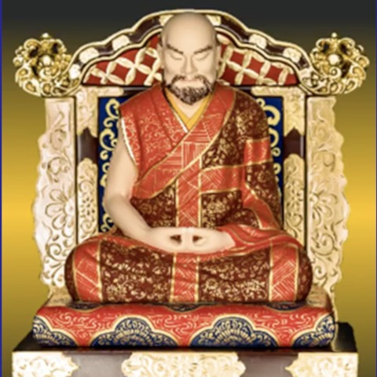
Taoist Master Qingzhen清真道長 · 了鳴和尚
His first human teacher: the reclusive master of Lientou Mountain, also known as Venerable Liaoming, who trained him in the Taoist arts and transmitted the Nyingma tantras. His parting instruction: “Let offerings be voluntary in all Dharma matters.”
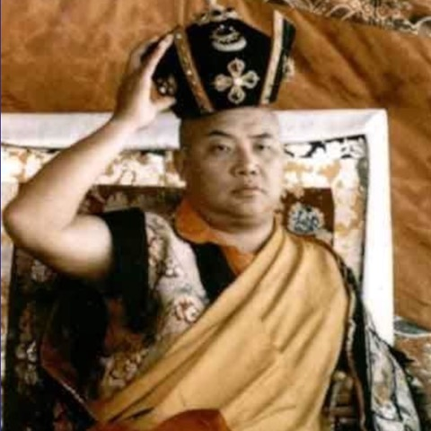
The Sixteenth Gyalwa Karmapa十六世大寶法王
Rangjung Rigpe Dorje, who greeted him in 1980 with the words “I have been waiting for you for a long time,” and bestowed the Five Buddhas Crown empowerment and the Mahamudra.
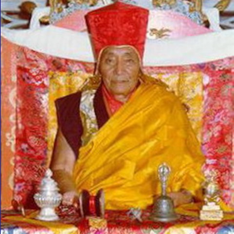
Master Sakya Zhengkong薩迦證空上師
Dezhung Rinpoche, under whom he studied in Seattle, receiving the Lamdre and the Hevajra transmissions. “You are a truly diligent practitioner, and it is no surprise that your realization is profound.”
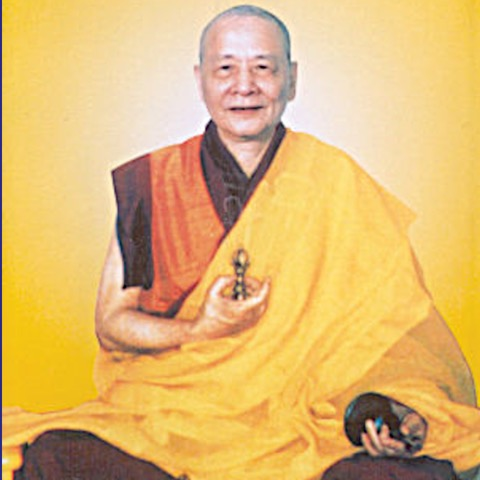
Guru Thubten Dargye吐登達爾吉上師
From whom he received the Yamantaka and Highest Yoga Tantra empowerments, together with the charge he has carried ever since: “Widely propagate the Kalachakra teachings across the five continents.”
Seven phases of a life
His students describe his life in seven phases, from an ordinary childhood in southern Taiwan to the teaching seat he still occupies today.
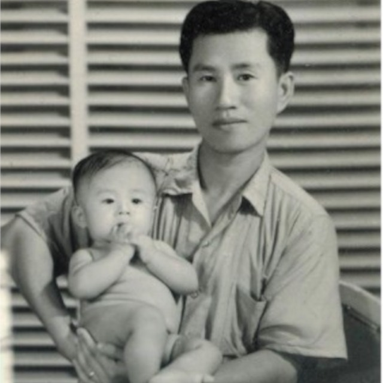
The ordinary years
He grew up poor in Chiayi, selling popsicles and toffee in the street, often barefoot. School showed him what he could do with words, and by his teens the newspapers were printing his poems. His first book appeared when he was seventeen.
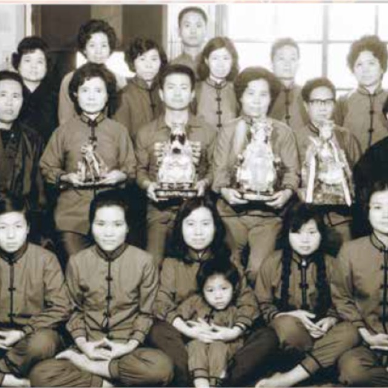
Learning the dharma
His divine eye was opened at a temple in Taichung when he was twenty-six. An unseen teacher taught him for the next three years, gave him the name Lian Sheng, and left him with a vow he keeps to this day: "I will not attain buddhahood until hell is empty." He trained in Taoism, Zen and Vajrayana Buddhism, and in 1982 he moved to Seattle.
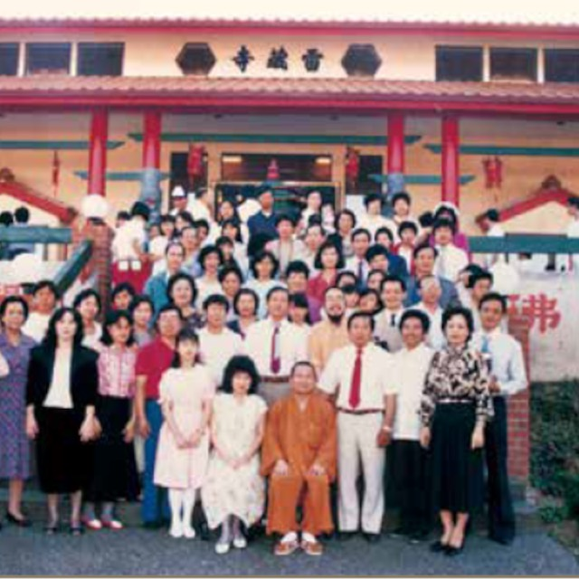
Founding the True Buddha School
It began with weekly Heart Sutra talks in the attic of his house in Ballard, and the talks grew into a school. In 1985 Ling Shen Ching Tze Temple was consecrated in Redmond; those present remember a single clap of thunder as the temple plaque went up. The next year he was ordained as a monk.
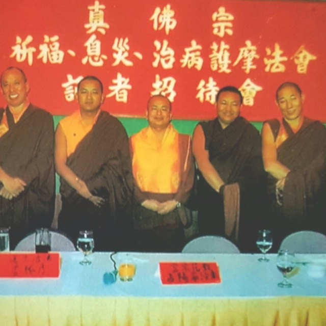
Carrying the teaching across the world
In 1989 he went back to Taiwan for the first time in seven years. Great ceremonies followed in Hong Kong, Taiwan and Southeast Asia, some filling entire stadiums, many remembered for healings. He kept writing through all of it, and finished his hundredth book at forty-eight.
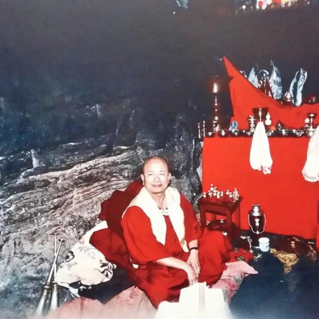
Withdrawing from the crowd
In 1993, in Vancouver, he announced that he was withdrawing from public life. He spent the years that followed teaching the inner tantras to smaller assemblies and putting the school's affairs in order; the True Buddha Foundation was established in 1997. At the end of 2000 he left Seattle for a mountain retreat, taking almost nothing with him. "Retirement is only a change in form. What remains unchanged is my love for all sentient beings."
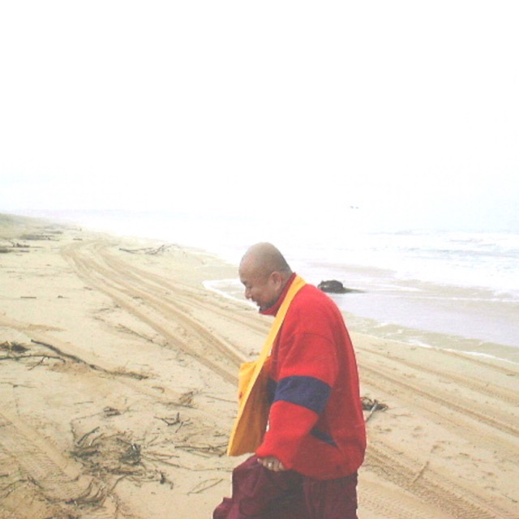
The long retreat
Six years of retreat followed. He fell gravely ill during them and kept writing anyway, close to a book a month, taking the illness itself into his practice. "The body is a prison," he wrote. His teaching on emptiness deepened from that time.
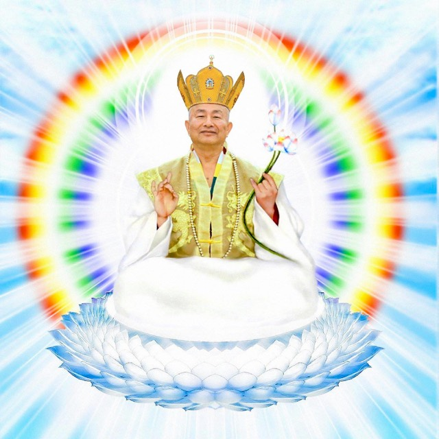
The great sun reappears
He came out of retreat in 2006 and returned to the teaching seat. Since then he has taught the Platform Sutra, the Hevajra commentary, the nine stages of Dzogchen, five years of Lamdre, and the Vajra and Vimalakirti Sutras, and through the pandemic years he held deliverance ceremonies every night. In 2025 he began expounding the Surangama Sutra. He still teaches every week.
Chronology and photographs from A Hidden Sanctuary of the Living Buddha.
Writings and teaching
His Holiness has written over three hundred books in Chinese: commentaries on the sutras and tantras, records of spiritual journeys, and practical guidance for cultivators. Many have been translated into English, Spanish, French, Vietnamese and other languages. He writes every day, and teaches before assemblies in person and online.
It was in one of those teachings that he praised the Sutra of the Sea Dragon King: The Dragon King Sutra is truly excellent — because it harmonises the Eight Classes of Heavenly and Dragon Beings.
This website is offered in that spirit.
Major teachings and transmissions
He teaches from the sutras and from the tantras in turn. His guru Thubten Dargye charged him to spread the Kalachakra teachings across the five continents, and the record of what he has transmitted from the teaching seat now spans four decades. These are some of the major ones.
The Heart Sutra心經
Weekly talks in the attic of his house in Ballard. The True Buddha School grew out of these.
The Essential Explanation of the Amitabha Sutra阿彌陀經釋要
His commentary on the work of Reverend Leguo, one of his first teachers.
The inner tantras內法
During his years of withdrawal he taught the internal practices of Tantrayana, along with the Sutra of Perfect Enlightenment and the Ksitigarbha Sutra.
Grand deity ceremonies大法會
A series of grand transmissions before his retreat: Usnishavijaya and Ragaraja in 1998, Marici in 1999, Hayagriva and the Kalachakra empowerment in Hong Kong in 2000.
The Platform Sutra of the Sixth Patriarch六祖壇經
His first scripture from the teaching seat after the six-year retreat.
The Hevajra commentary喜金剛
Transmitted in full, as he received it in the Sakya lineage.
The nine stages of Dzogchen大圓滿九次第
The complete path of the Great Perfection, taught stage by stage.
Lamdre道果
The Sakya path-and-fruit teaching, transmitted over five years of weekly discourses.
Bardo deliverance ceremonies中陰超度
Through the pandemic years he began performing the Thousand Dharma Vessels deliverance ceremony every night for the dead. He continues to do so every day, without fail.
The Vajra Sutra金剛經
Expounded chapter by chapter over two years.
The Rainbow Transformation Practice of Padmasambhava化虹大法
The first transmission, given in Taipei that December — the practice by which Padmasambhava attained the rainbow body.
The Vimalakirti Sutra維摩詰經
Two years on the layman's sutra of non-duality.
Dorje Drolo多杰卓洛
The empowerment of the wrathful form of Guru Padmasambhava.
The Surangama Sutra楞嚴經
The teaching he is expounding now, week by week.
Drashi Lhamo札基拉姆
The first transmission of the wealth-granting guardian goddess.
Mahasthamaprapta大勢至菩薩
The bodhisattva of great strength. The transmission is to be given this September.
The name Lian Sheng
“Lian Sheng” (蓮生) means born of the lotus. His students simply call him Shizun (師尊), the revered teacher, or Grandmaster Lu. As root guru of the True Buddha School he embodies the Triple Jewels for his disciples, and is the source of the lineage's blessing and guidance.
Whoever sincerely takes refuge receives that transmission and enters a stream of practice that leads, as the sutra promises, to the realization of one's own true nature.